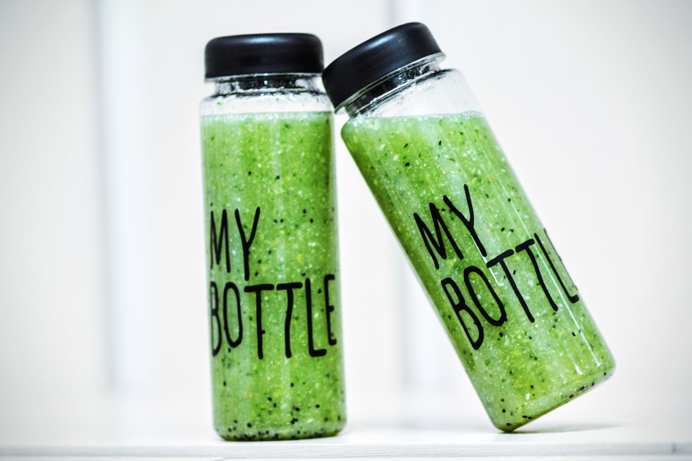

Denne brombær-blåbær-spinat smoothie er sikker på at give dig al den ernæring og energi som du vil have
brug for både før og efter din træning.
Med en god blanding af blandt andet brombær blåbær og spinat, så er denne smoothie helt klart et af de
bedste valg hvis du gå meget up i sundhed. Den kan fås, både hos visse caféer og inde i fitnesscentret
(så længe lager haves). Deres smag og indhold er lavet præcis til atleter.
Den ultimative split er lavet specielt til folk som træner tit og elsker at holde sig i gang. Den vil give dig den nødvendige energi til at kunne fortsætte din træning og samtidig smage godt, hvilket er det som vi hos Smoothie Royal går meget op i.
Den ultimative split har både dog gode sunde spinat, de søde blåbær og de syrlige brombær som vi alle meget godt kan lide og de komplementerer hinandens smagsprofil på det højeste niveau.
Denne smoothie er meget let at have med på farten da den kan købes både i fitness centeret eller i dit lokale supermarked.